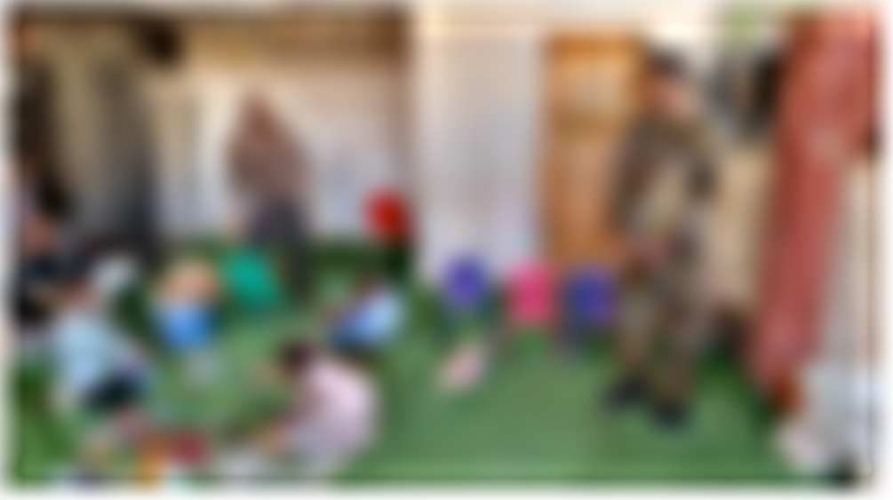
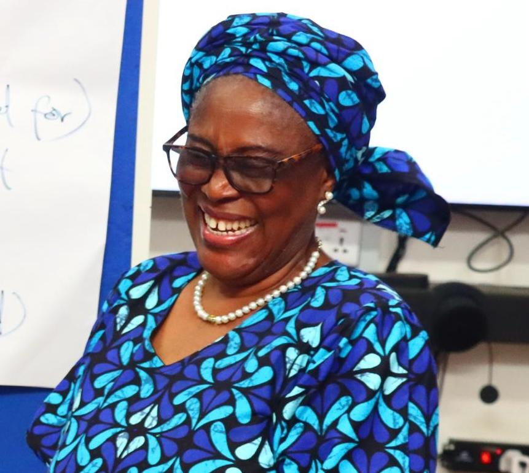

Our Vision
A society where every individual has access to opportunity, dignity and support regardless of circumstance.
EAGAS Global Charity Foundation advances dignity and opportunity for vulnerable communities through advocacy, education, mentorship, humanitarian support and sustainable development programs.
EAGAS identifies urgent social needs, works with community actors and designs interventions that strengthen resilience. The foundation focuses especially on women, girls, widows, orphans, internally displaced persons and underserved households.
Our method combines listening, training, relief, referral support, advocacy and transparent follow-up so that every activity can move from charity toward transformation.

A society where every individual has access to opportunity, dignity and support regardless of circumstance.
To improve lives through advocacy, education, mentorship, economic empowerment and humanitarian support while fostering sustainable community development.
We make a difference by pairing compassion with structure, accountability and community participation.
Transparent decisions and honest stewardship.
Human dignity comes first in every engagement.
Programs build confidence, skill and agency.
We track outcomes and report responsibly.
Vulnerable voices are centered and respected.
Local knowledge shapes stronger solutions.
Support is designed to create durable change.
Leadership is practiced through care and action.

Augusta C. Akparanta-Emenogu is a development practitioner, media advocate and community empowerment leader with more than two decades of experience improving lives in vulnerable and underserved communities.
She founded EAGAS Global Charity Foundation in 2003 to advance education, advocacy, women empowerment, psychosocial support, humanitarian assistance and sustainable community development initiatives across Nigeria.
Read Founder ProfileThe foundation begins with community listening and need identification. We then develop focused programs, mobilize resources, build local partnerships and document outcomes through photographs, stories, training records and impact reporting.